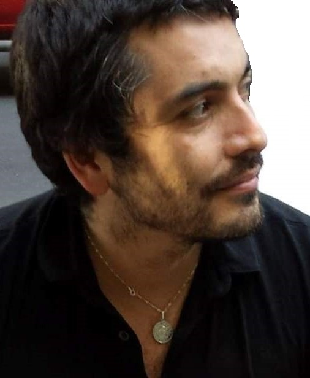

Currículum Vitae

Cristian González Herrera
Datos Personales
- Nombre: Cristian Alex González Herrera
- Dirección: San Pablo #1295, depto. 1003
- Correo: crgonzalezh@gmail.com
- Teléfono: +56 9 71365833
Educación
- Magíster en Ciencias de la Computación, Universidad Andrés Bello. 2022
- Ingeniero Civil Informático, Universidad Andrés Bello. 2020
- Licenciado en Ciencias, con Mención en Física, Universidad de Chile. 2006
Computación
- Lenguajes:
- R, nivel avanzado.
- python, nivel medio-avanzado.
- C, nivel avanzado.
- C++, nivel medio.
- Lenguajes de marcado/Herramientas WEB:
- HTML, nivel medio.
- Bootstrap, nivel medio.
- Bases de Datos:
- SQL, nivel avanzado.
- Pl/sql, nivel medio..
- Software:
- Latex,nivel medio.
- Matlab, .
- Office, nivel avanzado.
- Visualización:
- PowerBI, nivel medio.
- Tableau, nivel medio.
- Sistemas Operativos:
- Windows.
- Linux.
- Mac OS.